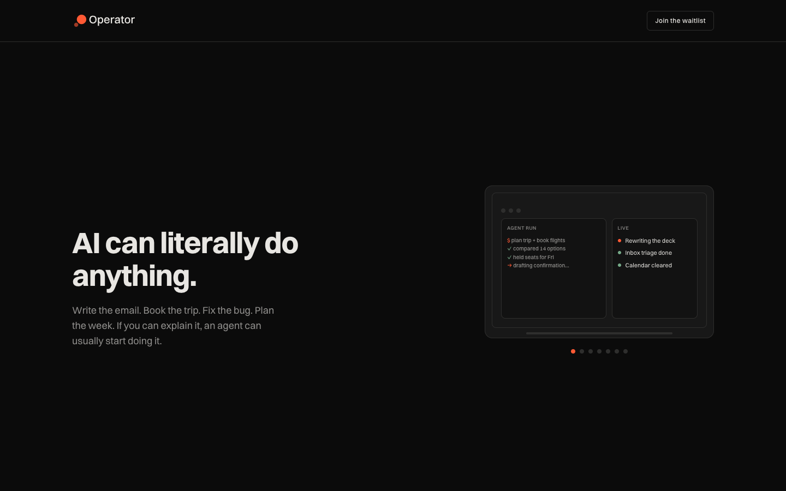
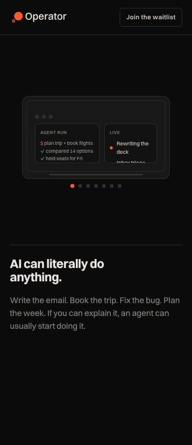

Operator brand refresh
Branch handoff — September 11, 2026: Branding changes are now committed on landing/operator for the requested GitHub push. The branch retains its existing mobile layout changes from 88637bb. All 26 browser checks passed on this combined branch. The test baseline now compares wording and scripts against that branch version. This push does not redeploy Vercel; the production deployment described below remains the earlier branding-only page.
September 11, 2026
Live: tryoperator.netBranding-only update completed. Supplied two-disc logo and favicon, Switzer typography, near-black and warm-gray base, vermilion and rust accents. Original wording, layout rules, and interactive scripts retained.
Checks: 26/26 browser checks pass locally and on production; 8/8 existing waitlist tests pass. The earlier production deployment matched its tested source byte for byte; this branch also includes its pre-existing mobile layout changes.
Attention: The existing social-preview reference /og.png returns HTTP 404. It was left unchanged because this update uses the supplied logo/favicon assets and preserves the existing content. Real email delivery was not tested.
Request and result
Update the website from the brand guidelines and redeploy to the existing Vercel account. User clarified “branding only update.”
Production’s original HTML matched commit f387fe7 exactly. Worktree starts at de4e5b8, which has that same page and adds deployment documentation. The latest landing branch includes different mobile layout changes; those were intentionally not included.
Changed files
| File | Change |
|---|
landing/index.html | Switzer Regular/Medium/Bold replaces both former typefaces. Four brand colors, neutral tones derived from the brand palette, supplied header/footer logo, and favicon. Layout rules, page wording, scripts, and API unchanged. |
landing/brand/operator-logo.svg | Exact supplied full-logo SVG from Google Drive; both discs and outlined Switzer wordmark. |
landing/brand/operator-icon-small.svg | Exact supplied small icon SVG; used as favicon, without the thin disc outline. |
planning/operator-brand-plan.html | Completed scope, plan, source references, and limits. |
saved-results/operator-brand/checks.cjs | Browser checks with an in-process local server; real signup requests intercepted and replaced with test responses. |
saved-results/operator-brand/evidence.txt | Exact initial failing check output, passing local/production runs, and deployment output. |
saved-results/operator-brand/screenshots/desktop-1440.png | Current landing/operator desktop screenshot. |
saved-results/operator-brand/screenshots/desktop-390.png | Current landing/operator 390px screenshot. |
saved-results/operator-brand/screenshots/desktop-320.png | Current landing/operator 320px screenshot. |
saved-results/operator-brand-review.html | This complete human review handoff. |
Behavior and contracts
No data, schema, environment variable, billing, endpoint, or API changes. Layout dimensions and breakpoint rules are untouched, though the new font changes line wrapping. Both wordmarks now use supplied vector artwork with accessible “Operator” alternative text. Buttons/labels use weight 500; headings use 700; body uses 400. Neutral surfaces are derived from the palette. Green success, warning, and error colors retain their existing meaning.
Exact checks and outcomes
node saved-results/operator-brand/checks.cjs with bundled Playwright in NODE_PATH: initial run reported 10 failed branding checks; after edits, 26 passed and 0 failed, exit 0.CHECK_URL=https://tryoperator.net node saved-results/operator-brand/checks.cjs: 26 passed, 0 failed, exit 0. Screens at 1440, 390, 320 pixels; palette, loaded fonts and weights, logo assets, horizontal overflow, script errors, wording, invalid email, mocked success.node --test lib/waitlist/validate.test.js: 8 passed, 0 failed, exit 0.git diff --check: exit 0, no whitespace errors.cmp landing/index.html /tmp/operator-brand-live-after.html: exit 0, exact match.- Logo and favicon production HTTP checks: both 200.
- Codex Computer Use: inspected desktop and mobile branding, and followed the waitlist link. Temporary viewport override reset afterward.
- Search in
landing api lib for old font names, #111210, #F0EEE8, #F06B3F, and weight 600: no remaining matches. All uses in the published surface were updated; unrelated native app code was outside scope.
Exact test and deploy output. Initial test launch could not find Playwright’s bundled browser; rerun used the already-installed Google Chrome. New unit tests were unnecessary for CSS and asset changes; browser tests cover the affected surface. No build/lint package exists for this static page. Vercel’s production build passed in 140ms. No new logging was added because no application logic changed; existing logs remain.
Deployment and saved source
Existing project aadivyaraushans-projects/operator, project ID prj_NOiAgtPtqnPgH23gMJ1l4wU1qn9Y. Command: vercel --prod --yes --scope aadivyaraushans-projects, exit 0, READY, aliased to tryoperator.net.
Deployment dpl_8TTaB9j3PVxNNhgHdQm51KABfiAc: immutable deployment. Previous production: operator-6bl004a3i-aadivyaraushans-projects.vercel.app. Original deployed source is preserved on branch codex/operator-brand-refresh. The branding commit has now been applied to landing/operator at /Users/aadivyar/Documents/Startups/ai native mobile software/codex-launcher-landing-outcome, preserving its existing mobile layout changes. Vercel project metadata was copied locally; no credentials were added.
Limits and manual checks
Switzer loads from Fontshare, as specified in the brand guide. Browser checks confirm it loaded during this run; a blocked external font service would use the system fallback. Full logo paths do not depend on font loading. Tests use reduced motion for stable screenshots. Existing scroll animations and mobile behavior remain unchanged; this was not a layout repair. No Safari or physical-device test. No real waitlist entry was sent.
- Open tryoperator.net; check the two-disc wordmark, warm text, and red-orange accents.
- Scroll through the story on desktop and phone; confirm the retained copy and new font.
- Follow Join the waitlist; try an empty email to inspect the validation message. Only submit a real address if you intend to join.
Current landing/operator screenshots


Focused exact page diff
diff --git a/landing/index.html b/landing/index.html
index e73cc55..7680ad2 100644
--- a/landing/index.html
+++ b/landing/index.html
@@ -17,10 +17,10 @@
<meta name="twitter:description" content="Operator is an agent-native way to use your phone. Text what you want done — agents handle it on your phone and your computer." />
<meta name="twitter:image" content="og.png" />
-<link rel="icon" href="data:image/svg+xml,%3Csvg xmlns='http://www.w3.org/2000/svg' viewBox='0 0 32 32'%3E%3Crect width='32' height='32' rx='7' fill='%23111210'/%3E%3Ccircle cx='16' cy='16' r='7' fill='%23F06B3F'/%3E%3C/svg%3E" />
-<link rel="preconnect" href="https://fonts.googleapis.com" />
-<link rel="preconnect" href="https://fonts.gstatic.com" crossorigin />
-<link href="https://fonts.googleapis.com/css2?family=Instrument+Sans:wght@400;500;600;700&family=JetBrains+Mono:wght@400;500&display=swap" rel="stylesheet" />
+<link rel="icon" type="image/svg+xml" href="/landing/brand/operator-icon-small.svg" />
+<link rel="preconnect" href="https://api.fontshare.com" />
+<link rel="preconnect" href="https://cdn.fontshare.com" crossorigin />
+<link href="https://api.fontshare.com/v2/css?f[]=switzer@400,500,700&display=swap" rel="stylesheet" />
<style>
*, *::before, *::after { box-sizing: border-box; }
html, body, h1, h2, h3, p, figure, ul, ol { margin: 0; }
@@ -30,17 +30,17 @@ button, input { font: inherit; color: inherit; }
a { color: inherit; text-decoration: none; }
:root{
- --bg: #111210;
- --surface: #1A1B18;
- --text: #F0EEE8;
- --muted: #969990;
- --hairline: #30312D;
- --signal: #F06B3F;
+ --bg: #0B0B0B;
+ --surface: color-mix(in srgb, #E8E6E2 6%, #0B0B0B);
+ --text: #E8E6E2;
+ --muted: color-mix(in srgb, #E8E6E2 60%, #0B0B0B);
+ --hairline: color-mix(in srgb, #E8E6E2 16%, #0B0B0B);
+ --signal: #FF5934;
+ --rust: #9E3924;
--success: #75A987;
--warning: #D49A3B;
--error: #E46F61;
- --font-sans: 'Instrument Sans', -apple-system, BlinkMacSystemFont, 'Segoe UI', sans-serif;
- --font-mono: 'JetBrains Mono', ui-monospace, SFMono-Regular, Menlo, monospace;
+ --font-sans: 'Switzer', -apple-system, BlinkMacSystemFont, 'Segoe UI', sans-serif;
--wrap: 1240px;
--pad: 32px;
}
@@ -81,7 +81,7 @@ body{
overflow-x: hidden;
}
-.mono{ font-family: var(--font-mono); }
+.mono{ font-family: var(--font-sans); font-weight: 500; }
.wrap{
max-width: var(--wrap);
@@ -120,13 +120,13 @@ body{
padding-block: 20px;
}
.nav__mark{
- font-family: var(--font-mono);
+ font-family: var(--font-sans); font-weight: 500;
font-size: 14px;
font-weight: 500;
letter-spacing: 0.02em;
}
.nav__link{
- font-family: var(--font-mono);
+ font-family: var(--font-sans); font-weight: 500;
font-size: 12px;
letter-spacing: 0.04em;
padding: 8px 14px;
@@ -148,7 +148,7 @@ body{
align-items: center;
justify-content: center;
font-family: var(--font-sans);
- font-weight: 600;
+ font-weight: 500;
font-size: 15px;
padding: 14px 24px;
border-radius: 6px;
@@ -156,7 +156,7 @@ body{
cursor: pointer;
transition: opacity 150ms ease, transform 150ms ease;
}
-.btn--primary{ background: var(--signal); color: var(--bg); }
+.btn--primary{ background: var(--signal); color: var(--bg); border-color: var(--rust); }
.btn--primary:hover{ opacity: 0.88; }
.btn--primary:active{ transform: translateY(1px); }
@@ -183,7 +183,7 @@ body{
}
.chapter__headline{
font-family: var(--font-sans);
- font-weight: 600;
+ font-weight: 700;
font-size: clamp(2rem, 3vw + 1.2rem, 3.4rem);
line-height: 1.1;
letter-spacing: -0.02em;
@@ -414,7 +414,7 @@ body{
display: flex;
align-items: center;
justify-content: space-between;
- font-family: var(--font-mono);
+ font-family: var(--font-sans); font-weight: 500;
font-size: 11px;
color: var(--muted);
margin-bottom: 16px;
@@ -436,7 +436,7 @@ body{
}
.section-label{
- font-family: var(--font-mono);
+ font-family: var(--font-sans); font-weight: 500;
font-size: 10px;
letter-spacing: 0.08em;
text-transform: uppercase;
@@ -479,7 +479,7 @@ body{
overflow: hidden;
}
.laptop-panel--code{
- font-family: var(--font-mono);
+ font-family: var(--font-sans); font-weight: 500;
font-size: 10px;
line-height: 1.55;
color: var(--muted);
@@ -487,7 +487,7 @@ body{
.laptop-panel--code .hi{ color: var(--signal); }
.laptop-panel--code .ok{ color: var(--success); }
.laptop-panel__title{
- font-family: var(--font-mono);
+ font-family: var(--font-sans); font-weight: 500;
font-size: 9px;
letter-spacing: 0.06em;
text-transform: uppercase;
@@ -562,7 +562,7 @@ body{
margin-bottom: 14px;
}
.chat-app__tab{
- font-family: var(--font-mono);
+ font-family: var(--font-sans); font-weight: 500;
font-size: 9px;
letter-spacing: 0.04em;
padding: 5px 8px;
@@ -603,7 +603,7 @@ body{
border: 1px dashed var(--hairline);
border-radius: 8px;
padding: 10px 12px;
- font-family: var(--font-mono);
+ font-family: var(--font-sans); font-weight: 500;
font-size: 10px;
color: var(--muted);
text-align: center;
@@ -680,7 +680,7 @@ body{
.duo__line::before{ left: -2px; }
.duo__line::after{ right: -2px; }
.duo__label{
- font-family: var(--font-mono);
+ font-family: var(--font-sans); font-weight: 500;
font-size: 9px;
color: var(--muted);
}
@@ -694,7 +694,7 @@ body{
background: color-mix(in srgb, var(--signal) 12%, var(--surface));
}
.duo__code{
- font-family: var(--font-mono);
+ font-family: var(--font-sans); font-weight: 500;
font-size: 9px;
line-height: 1.45;
color: var(--muted);
@@ -713,7 +713,7 @@ body{
.task-row__body{ min-width: 0; flex: 1; }
.task-row__title{
font-size: 13px;
- font-weight: 600;
+ font-weight: 500;
color: var(--text);
line-height: 1.3;
white-space: nowrap;
@@ -724,13 +724,13 @@ body{
display: flex;
align-items: center;
gap: 6px;
- font-family: var(--font-mono);
+ font-family: var(--font-sans); font-weight: 500;
font-size: 10px;
color: var(--muted);
margin-top: 4px;
}
.task-row__state{
- font-family: var(--font-mono);
+ font-family: var(--font-sans); font-weight: 500;
font-size: 10px;
margin-bottom: 3px;
}
@@ -793,7 +793,7 @@ body{
}
.chip{
align-self: flex-start;
- font-family: var(--font-mono);
+ font-family: var(--font-sans); font-weight: 500;
font-size: 10px;
color: var(--muted);
border: 1px solid var(--hairline);
@@ -853,7 +853,7 @@ body{
box-shadow: 0 12px 40px color-mix(in srgb, var(--bg) 70%, transparent);
}
.never-prompt__label{
- font-family: var(--font-mono);
+ font-family: var(--font-sans); font-weight: 500;
font-size: 10px;
letter-spacing: 0.06em;
text-transform: uppercase;
@@ -862,7 +862,7 @@ body{
}
.never-prompt__text{
font-size: 15px;
- font-weight: 600;
+ font-weight: 500;
color: var(--text);
line-height: 1.35;
}
@@ -879,7 +879,7 @@ body{
}
.cta__heading{
font-family: var(--font-sans);
- font-weight: 600;
+ font-weight: 700;
font-size: clamp(1.75rem, 2vw + 1.2rem, 2.75rem);
line-height: 1.15;
letter-spacing: -0.02em;
@@ -956,7 +956,7 @@ body{
<header class="nav">
<div class="wrap">
- <a class="nav__mark" href="#beat-1">Operator</a>
+ <a class="nav__mark" href="#beat-1"><img src="/landing/brand/operator-logo.svg" alt="Operator" width="119" height="28" /></a>
<a class="nav__link" href="#waitlist">Join the waitlist</a>
</div>
</header>
@@ -1044,7 +1044,7 @@ body{
<footer class="footer">
<div class="wrap">
- <span class="footer__mark mono">Operator</span>
+ <span class="footer__mark"><img src="/landing/brand/operator-logo.svg" alt="Operator" width="102" height="24" /></span>
<p class="footer__print">Apache 2.0 · Operator is an independent project and is not affiliated with OpenAI, Anthropic, or Google.</p>
</div>
</footer>